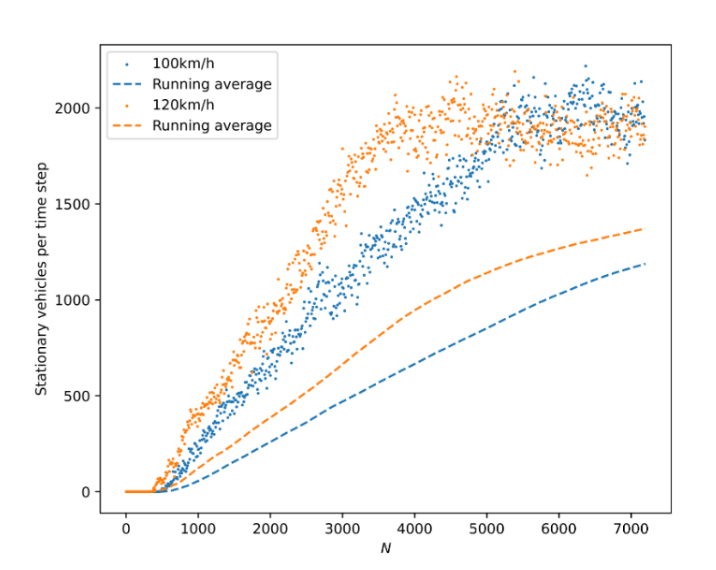

My Research

A Cellular Automaton for a Two-Lane Roadway
An investigation into the effect of road bottlenecks on a two-lane roadway using the Nagel-Schreckenberg model, with all findings and data attached.